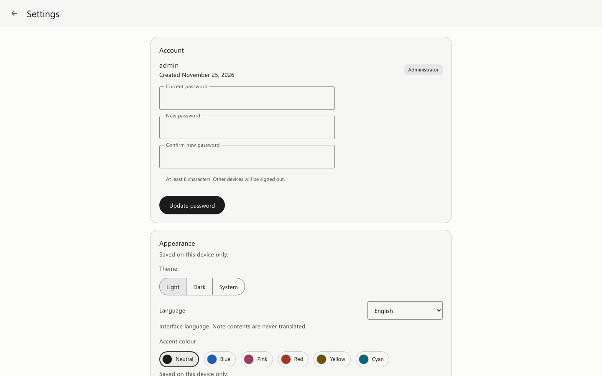
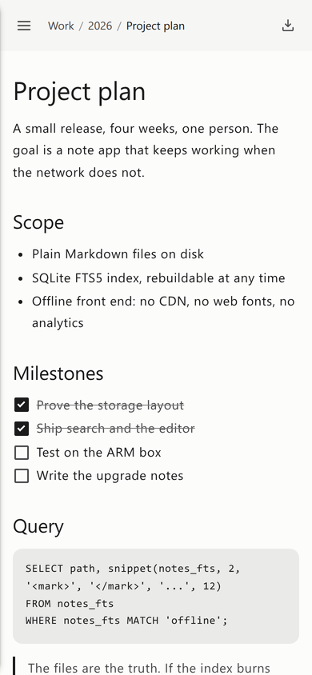

Files first
One Markdown file per note, one folder per sidebar folder, no hidden format. Edit them over SSH; the tree and the index catch up within two seconds.
Self-hosted · Docker · MIT
Flow Notes is a note server you run yourself. Every note is a plain
Markdown file under data/notes/<account>/, the folders
on disk are the sidebar, and SQLite holds only the accounts and a search
index you can throw away and rebuild. The browser client fetches nothing
from the network — no CDN, no web fonts, no remote icons.


Storage, search, editing and accounts — and what each of them refuses to do.
One Markdown file per note, one folder per sidebar folder, no hidden format. Edit them over SSH; the tree and the index catch up within two seconds.
SQLite FTS5 with snippet() excerpts and highlighted hits, plus a substring fallback so Chinese, Japanese and Korean words still match. Delete the index and resync.
Tiptap with a Markdown round trip. / opens 17 commands; # , - , 1. , > , --- and a fence convert as you type; pasted screenshots are uploaded and inserted.
Each account owns notes/<name>/ and uploads/<name>/, and the index is filtered by owner. Administrators add, disable and delete accounts; deleting moves the files to data/trash/.
The editor bundle is built locally with esbuild, every icon is an inline SVG, and the server sends default-src 'self'. A browser that cannot reach the internet still gets the whole interface.
English, Arabic, Spanish, French, Russian and both Chinese scripts, with a full right-to-left layout for Arabic. Light, dark or follow the system, and six accent tones.
Edits save 600 ms after the last keystroke; a pending change is flushed with keepalive when the page is hidden. Every note can also leave as a ZIP of Markdown.
Multi-architecture image on linux/amd64 and linux/arm64. Mount ./data and that is the entire state: notes, images, accounts, index.
Taken from a running instance with a demo account — the same build you can pull.


Docker with Compose, one port and one directory. No external database, no mail server, no TLS termination.
The image builds locally from source. ./data is created on first start; mount it and that is the whole state.
git clone https://github.com/noelbennettz/flownotes.git
cd flownotes
mkdir -p data
docker compose up -d --buildghcr.io/noelbennettz/flownotes:latest is public and multi-architecture, so docker pull needs no login. The Compose file that comes with the repository keeps ./data and the same port.
docker compose -f docker-compose.ghcr.yml up -d
docker compose -f docker-compose.ghcr.yml logs -f flownotesOpen http://your-server:8000/; with no accounts the service sends you to /setup. Create the administrator, and the instance becomes yours. Set FLOWNOTES_SETUP_TOKEN before the first start if the port may be reachable by others: the wizard then asks for it and refuses everything else.
Rootless Docker: the container user is 1000, which maps to a sub-uid and
cannot write a ./data owned by you. Put FLOWNOTES_UID=0 and
FLOWNOTES_GID=0 in .env so the container writes files as your own
user; on a normal rootful install, leave the defaults.
What Flow Notes deliberately does not do, before you move notes into it.
/uploads is not public; a note image is served to its owner. Files from the single-user era stay readable by any signed-in account.
Plain HTTP is supported on purpose. The session cookie is
HttpOnly and SameSite=Lax but not Secure, so an internal
address such as http://192.168.1.10:8000 can sign in. Put it behind a TLS proxy
before exposing it to the internet.
Search is a convenience, not the source. The index ranks and highlights;
the files decide what exists. Run POST /api/resync (or delete
index.db) whenever you doubt it.
What runs, what it listens on, and what it stores.
./data volume: notes, uploads, index.db, session secretThe things worth knowing before moving a year of notes into it.
In data/notes/<account>/, one .md file per note, and folders for folders. data/index.db holds the accounts and the FTS5 index; it can be deleted and rebuilt from disk, so a backup of the Markdown is a backup of the notes.
Yes. GET /api/tree and GET /api/search compare the disk with the index at most once every two seconds per account, so an external edit appears without a restart. A file written while the same note is open in the browser is the one case that can lose the browser's pending change.
The page, the stylesheet, the editor bundle and every icon come from the same origin, and the server sends a Content-Security-Policy of default-src 'self'. Nothing is fetched from a CDN, a font service or an icon host at any point.
On the server: python -m app.cli passwd admin, or docker compose exec -it flownotes python -m app.cli passwd admin. It writes the database directly, so no restart is needed and existing sessions for that account stop working.
Copy data/ — notes, uploads, index.db and .session-secret — and start the container on the new host with the same directory. Keeping the session secret keeps everyone signed in; dropping it only signs them out.
It is a small personal tool: run it, fork it, change it, ship it. The only request is that the copyright notice travels with the copies.